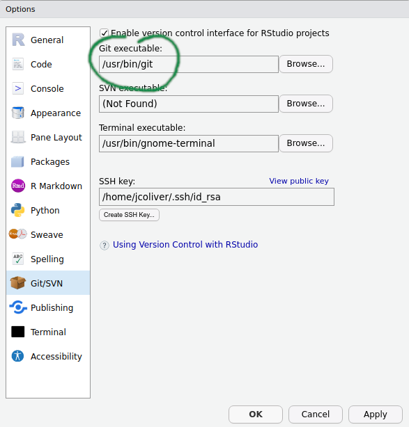
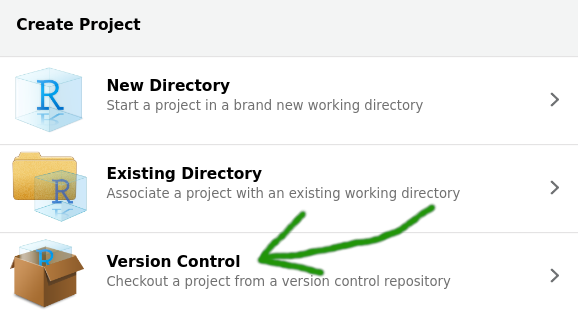
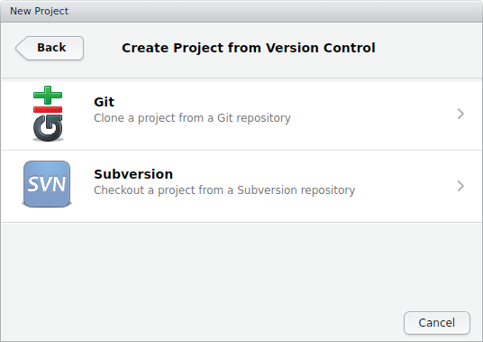
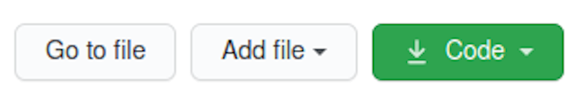
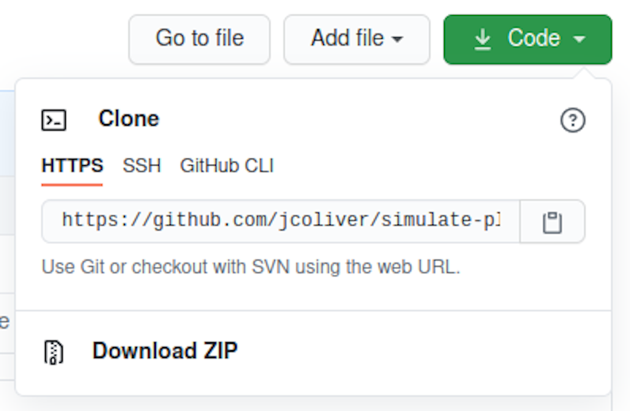
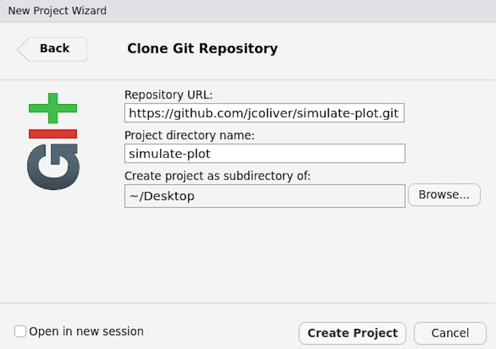
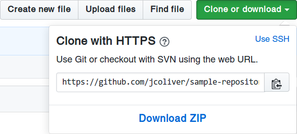
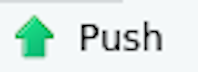

git config --global user.name 'Your Name'
git config --global user.email 'your@email.com'Git and GitHub in RStudio
Ready to stop e-mailing code to your collaborators? Want a better way of keeping track of the changes you make on your programming projects? The Git system is designed to make collaboration easier and more transparent. This lesson provides an introduction to the version control system Git, one central sharing point called GitHub, and how you can use the two in RStudio.
Learning objectives
- Be able to explain the difference between Git and GitHub
- Track changes made to local copies of code
- Contribute code to a public repository on GitHub
Git vs. GitHub
The oft-asked question: What is the difference between Git and GitHub? has a relatively simple answer.
- Git: a version control system. It is an open-source piece of software that acts a lot like the “Track Changes” functionality on your favorite word processing program.
- GitHub: a website where you store your work and collaborate with others. GitHub has an instance of Git running on the website, keeping track of your changes as well as your collaborators’ changes.
Git was originally developed for keeping track of changes in computer programming code, but is now used for much more, including open access journals, blogs, and text books.
Throughout the rest of the lesson, you’ll see the word “repository” (or “repo”, for short). A repository can be considered a storage system (like a folder on your computer) where your work is kept.
Getting started
Make sure you have R and RStudio installed on your machine.
You’ll need to have Git installed to take advantage of this version control functionality. To see if you have Git installed on your system, open RStudio and select Global Options from the Tools menu (Tools > Global Options…). In the dialog that opens, click the Git/SVN tab on the left-hand side of the pop-up window. Near the top of the pane, there is a field for the Git executable. If it says something like “/usr/bin/git” or “C:/Program Files/Git/” then you already have Git installed. Yay! If instead it says “(Not Found)” in the Git executable field, then you will need to install Git before proceeding.

(Another way you can do this is to use the command line to check for Git. On Windows, you can run which git in your command prompt; on Mac OS or Linux, you can run git --version)
If Git is not installed on your machine, head to the Software Carpentry instructions for Git and install whichever version is appropriate for your operating system. You only need to do this step if the previous step indicated that Git was not installed on your computer. After you install Git, shutdown and restart RStudio.
After installing Git, you’ll need to configure Git. You can do this through RStudio or in your command line interface of choice. In RStudio, open a new Terminal via Tools > Terminal > New Terminal and enter:
Replacing 'Your Name' and 'your@email.com' with your actual name and e-mail (surrounded by single-quotes).
Next, if you have not already, sign up for a GitHub account at github.com. Registration is free and simple. Make sure you remember your GitHub ID and password - we’ll need those later in the lesson.
xcrun: error: invalid active developer path
What? On some versions of Mac OS, you will need to install one more program in order to get RStudio and Git to talk with each other. If you see an error like
xcrun: error: invalid active developer path (/Library/Developer/CommandLineTools),
missing xcrun at: /Library/Developer/CommandLineTools/usr/bin/xcrun.shut down RStudio, open the Terminal application and run
xcode-select --installopen RStudio again and you should be all set! If you want to know more about this error, head over to Stack Overflow and read about this in more detail.
We can’t have nice things
In the old days, we were able to send changes from our machine to GitHub with our username and password. But in those days we were also using poor passwords, like “1234” or “password”, which makes it easy for bad actors to mess with our code. To counter this, GitHub now requires us to take different authentication approaches. You can read about the various approaches on GitHub Docs, but for this lesson we will focus on Personal Access Tokens. These are effectively really long, random passwords that are harder to guess. The GitHub instructions for generating a token are at https://docs.github.com/en/authentication/keeping-your-account-and-data-secure/creating-a-personal-access-token#creating-a-token
A couple of notes on those instructions:
- In step 5, when you click “Generate a new token”, the website may prompt you for your password. For this field, use the password you use to log in to the GitHub website.
- In step 6, “Give your token a descriptive name.” I will use the name of the computer I am using. This way if I upgrade my machine, my computer dies, or god forbid, someone steals it, I can revoke the token access.
- In the expiration options in step 7, make this a short duration if you are using a public machine or a loaner. Remember you can always delete this token if you need to.
- For scopes in step 8, check the box that says “repo”.
When you click the “Generate token” button, you will be taken to a new site that displays this token. This is the only time GitHub will ever show you this token. I’m going to leave this tab in my browser open so I can copy the token later in the lesson. If you are worried that you might close the tab, you can copy and paste it into a text editor (not in RStudio) for use later on. If you lose your token, no worries, you can generate a new one (and delete the one you lost).
Now when you are working in RStudio and you are asked for your GitHub password, you will paste that long token into the window. We’ll see this in action later in the lesson.
Decision Time
At this point, you’ll want to decide how you are going to connect to GitHub. This lesson covers three options:
- Start a new repository on GitHub
- Use an existing GitHub repository
- Use an existing local repository
After you connect using one of these three options, we’ll deal with communication between RStudio and GitHub.
1. Starting from scratch
- If you are just starting a project and want to use GitHub for collaboration, it is easiest to start on GitHub. Using your favorite web browser, log into your GitHub account and create a new repository. There is usually a big green button “New repository” or “New” you can click on.
For this lesson,
- enter “simulate-data” in the repository name field, and
- “A repository for simulating and plotting data” in the description field, and click the “Create repository” button. Give yourself a pat on the back: You are using GitHub!
At this point, leave the browser open and open RStudio. We want to make a new project, using the GitHub repository we just created.
- Create a new project (File > New Project…)
- Select the Version Control option

4. Select the Git option

- Finally, in the dialog that opens, you need only fill in information for the Repository URL. You can copy the URL to the clipboard by navigating to your GitHub repository website, clicking the green “code” button:

This should open a dialog with the URL (it will start with “https” and end with “.git”). Copy the URL by clicking the clipboard icon.

Return to RStudio and paste into the Repository URL field:

- Click “Create Project” and you’ll be connected. Jump to the Collaborate! section below to use Git in RStudio.
2. Use an existing GitHub repository
If you are going to use a repository that already exists on GitHub, you can head to that repository GitHub site, and click the “Clone or download” button:
That should open a dialog with the repository URL. Copy the URL to the clipboard.

At this point, follow steps 2-6 in the previous section (Starting from scratch).
3. Use an existing local repository
Let’s say you have code on your machine that you want to push to GitHub. First, log into GitHub and create a new repository (see step 1 in Staring from scratch, above). Then, to connect your machine to this repository through the command line interface of RStudio (Tools > Terminal > New Terminal).
echo "# simulate-data" >> README.md
git init
git add README.md
git commit -m "first commit"
git remote add origin https://github.com/jcoliver/simulate-data.git
git push -u origin mainMake sure to substitute your GitHub repository URL in the git remote add origin line.
At this point, shut down and restart RStudio to complete the integration with GitHub.
A Warning
You have set things up. Your GitHub repository is ready to use and you have it connected to your local RStudio. The next step is to
Pause.
It bears mentioning that, by default, the maximum file size on GitHub is 100 MB (see caveat below). So before you add any file to Git’s history on your local machine (that is, before you check the box next to the file name in the Git tab), make sure the file is less than 100 MB. If you do have files larger than 100 MB, you want to list them in your .gitignore file (this is a text file in your repository’s folder that lists files you do not want Git to keep track of - like large files). One work-around is to compress large files into a zip file (or file_s_, remember, they need to be below 100 MB) and add that .zip file to your Git history.
Caveat: You actually can store files larger than 100 MB on GitHub, but you will need to set up Git LFS (Large File Storage). If you go this route, you will need to set this up before you add any large files to Git’s history. Git LFS can be a bit of a headache to set up, but the official GitHub LFS documentation is a good place to start.
Collaborate!
By now you have linked your RStudio project with a GitHub page. For the purposes of this lesson, we want to consider two Git repositories:
- Your local repository, i.e. the files on your computer
- The remote repository, i.e. the files that live on the GitHub website
The general process of working with remote repositories is:
Pull > Make changes (and save!) > Add > Commit > Push > Repeat
The steps in bold are actual Git commands. We’ll go through all these in a bit more detail:
- Pull: This downloads any file updates from the GitHub repository and tries to incorporate them into your local copy. This step is often forgotten, which can cause some headaches later on, so try to remember to start your session with a pull. You can pull the latest code from GitHub with the blue Pull button in the Git tab of the (usually) top-right panel in RStudio.
- Make changes: At this point you can add more files, change files that exist, or delete files you don’t need any more. Just remember to save your changes.
- Add: The add command instructs Git that you would like to make Git aware of any changes you made to files on your local repository (saving isn’t enough in this case). After you have made your changes (and saved them!), add them by clicking the “Staged” box next to the file name in the Git tab of RStudio.
- Commit: And the last thing you’ll need to do to record those changes on your local Git repository is to commit the changes. In RStudio, click the “Commit” button in the Git tab. The dialog that opens will show the changes you are about to commit; be sure to write a commit message in the “Commit message:” dialog. Make it brief but informative. Do not skip the commit message, regardless of what Randall Munroe might say. Note only those changes that were added will be included in the commit.
- Push: Finally, you want to move those committed changes up to the remote (GitHub) repository. The green Push button will send any changes to GitHub. Note that you will need your GitHub ID and password to push changes to the remote repository. Also note that if you are pushing to a GitHub repository that you did not create, you will need to be added as a collaborator by the repository owner.
- Repeat: This step is pretty self-explanatory. :)
Test it
If you want to test out Git, create a new R script in RStudio via File > New File > R Script. Add the following to the script (replacing with your name, e-mail address, and current date):
# Simulate and plot data
# Jeff Oliver
# jcoliver@arizona.edu
# 2021-03-23
# Simulate predictor variable
predictor <- rnorm(n = 100)
# Simulate response variable with some noise
response <- 2 * predictor + rnorm(n = 100, sd = 0.2)
# Plot the data
plot(x = predictor, y = response)Save this file as “simulate-plot-data.R”.
Now it is time to Git!
- Find the Git panel (it should be available in the upper right pane of your RStudio window). Click the little box to the left of the file we just created (simulate-plot-data.R). A check-mark should appear in the box (sometimes you have to wait a moment for the check-mark to appear, so be patient). Checking that box is the Add step described above.
- Next we need to Commit by pressing the Commit button in the Git pane. In the dialog that appears, we want to enter a brief but informative commit message. For this commit, type “Initial commit” in the commit message field and press the commit button.
- The final step in this process is to send these latest changes to GitHub with a Push. Once again in the Git pane, find the Push button, indicated by a green, upward-facing arrow.

At this point, you may be prompted to enter your GitHub username and password. Be sure to look at what the specific field is asking for (username or password) as both dialog windows will be titled “Password”. Remember for the password, you want to paste in your Personal Access Token, that long string of numbers and letters we generated at the beginning.
Note: if you have used RStudio to talk with GitHub in the past, you may need to force R to ask you for your GitHub credentials. You can do with with the gitcreds package for R. If you were prompted for your credentials, you do not need to do the steps below.
install.packages("gitcreds")
library(gitcreds)
gitcreds_set()
# Select option 2 and provide credentials at prompts.Return to your web browser with your GitHub repository and refresh the page. Your new file (simulate-data.R) should now be shown! Well done!
Additional resources
- Official RStudio Git support page
- GitHub LFS documentation
- Software Carpentry Git and RStudio lesson
- Library Carpentry Git lesson
- A PDF version of this lesson